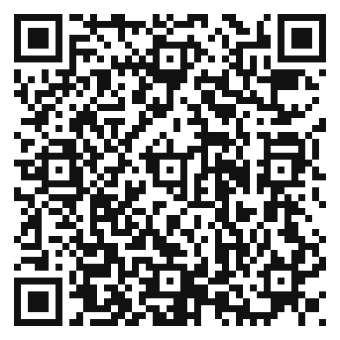

📱 Skanna för att se filmen igen!
- Vilken roll är godast att ha - och vilken är svårast?
- Kom på ett eget exempel: när bytte du roll snabbt i en match?
- Vad kan du ropa till en kompis som glömt sin roll?
📱 Skanna för att se filmen igen!
- Varför vill du INTE stå i skuggan mellan pucken och en försvarare?
- Hur märker du att du står i skuggan just nu?
- Vad gör du när du upptäcker att du hamnat där?
📱 Skanna för att se filmen igen!
- Varför är en enkel säker passning ofta bättre än en svår?
- Varför ska du inte hålla pucken en extra sekund om en kompis är fri?
- Kom på ett eget tips för hur laget håller kvar pucken.
📱 Skanna för att se filmen igen!
- Varför räcker det inte att bara stå still och ropa på pucken?
- Vad gör du direkt efter att du passat pucken vidare?
- Vad händer om alla i laget står stilla samtidigt?